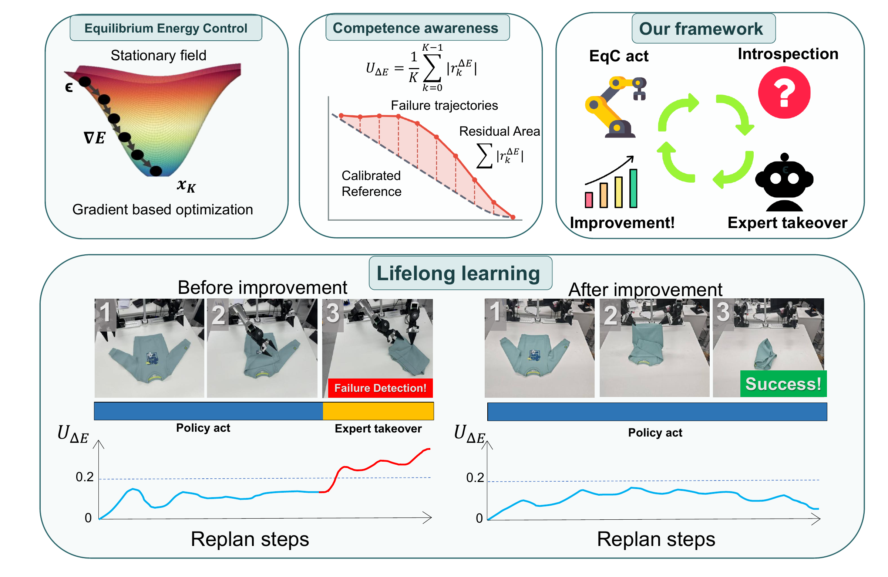
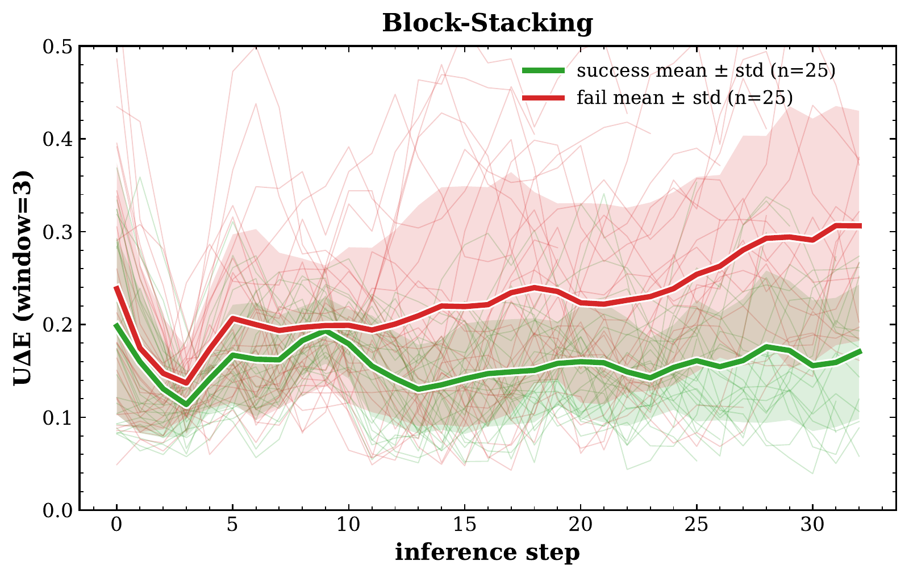

Refine the action.
Optimize an action chunk using the learned energy gradient. Execute a short prefix, then replan from the next observation.
xk+1 = xk + ηk ∇xEθ(xk, z)
A robot should know how to act,
when to ask for help,
and how to learn from it.
EqC uses an explicit conditional energy landscape to generate actions, inspect their reliability, and turn timely assistance into new autonomous capabilities.
Optimize an action chunk using the learned energy gradient. Execute a short prefix, then replan from the next observation.
Measure whether energy progress agrees with the relation learned from demonstrations. Persistent violations signal a need for help.
Energy-Gated DAgger collects expert recoveries where the policy needs them, then trains on the accumulated experience.

Three bimanual tasks. Twenty independent trials per task, with randomized object placements. The same Galaxea G0.5 backbone, with and without EqC.
G0.5
G0.5 + EqC (ours)
Coordinate a brush and dustpan to collect scattered debris, then deposit it into a bin.
One illustrative EqC rollout is shown.
Success rates are from the paper evaluation.
63.3% → 91.7%Average success across the three tasks
Explore the full evaluation ↗EqC integrates into both Diffusion Transformer and flow-matching VLA policies. Selected aggregate results from Tables 1–2; each benchmark uses its own protocol.
| Benchmark | Policy / comparison | Baseline | With EqC |
|---|---|---|---|
| LIBERO | DiT · published GeCO baseline | 93.5% | 94.0% |
| RoboTwin 2.0 | π₀ · Easy / Hard | 49% / 18% | 63% / 33% |
| VLABench | π₀ · five tracks | 29.4% | 36.7% |
| LIBERO-Plus | π₀ · overall robustness | 53.6% | 65.8% |
LIBERO compares the EqC multi-seed mean with published baselines. The appendix also reports independent multi-seed reproductions.
Reliable failure detection is the prerequisite for timely takeover. EqC reads inconsistency along the action-refinement trajectory, rather than relying on the final action alone.
In 50 real-world block-stacking rollouts, the energy-consistency signal separates successful and failed executions, providing a basis for intervention.
25 successful + 25 failed rollouts
When persistent energy-consistency violations raise an alarm, EqC pauses. An expert completes the task. The recovery becomes training data for the next round.
Starting from 18 seed demonstrations, targeted recovery expands the dataset to 48 episodes and improves autonomous block stacking.
Means over 3 independent runs.
20 autonomous evaluation trials per checkpoint, per run.
Matched data and training budgets across methods.
After initialization and expert preparation, EqC and an Astra-powered robot agent form a fully automated intervention-and-learning pipeline.
The prepared agent adapts its script to the intervention state. Execution shown at 4× speed.
Astra begins with the same 18 demonstrations used to train the initial garment-folding policy. Through full-task and takeover practice, it turns spatial reasoning and control experience into reusable skills.
At an EqC alarm, the prepared agent adapts an executable script to the current scene. Its recoveries then supervise the compact policy.
Proof-of-concept garment-folding experiment; separate from the three-run lifelong learning evaluation.
Fit a script, practice on the robot, reflect, and consolidate reusable skills.
Observe the intermediate state and execute a recovery using the prepared skills.
Train EqC on the recovery data, bringing the large model's capabilities into autonomous control.
Moving from blocks to cups reveals new competence gaps—and interference with a previously learned skill. Targeted recovery on both tasks restores dual-task autonomy.
Sequential transfer study initialized from Block Stacking Run 1, Round 5. Cumulative dataset: 48 → 54 → 66 demonstrations.
Long-term robot autonomy depends on more than effective action generation: a policy must recognize when its behavior is no longer sufficiently supported and use assistance to improve. We introduce Equilibrium Energy Control (EqC), a framework for introspective lifelong robot learning built around an explicit conditional energy landscape. EqC casts generative action refinement as equilibrium-seeking optimization, while the geometry of the refinement process reveals whether the generated behavior remains consistent with the learned landscape. This competence signal enables Energy-Gated DAgger, where persistent energy-consistency violations trigger expert takeover and the resulting recovery trajectories are aggregated for subsequent policy updates. EqC integrates naturally into both Diffusion Transformer policies and flow-matching-based vision-language-action (VLA) policies. Across simulation and real-world bimanual manipulation, EqC matches or improves control performance and robustness while enabling timely intervention near the policy's competence boundary. A real-world study further shows how these interventions progressively expand the range of situations handled autonomously, providing a practical path from static generative controllers toward self-improving robot systems.
@misc{yang2026eqc,
title={EqC: Equilibrium Energy Control for Introspective Lifelong Robot Learning},
author={Haodong Yang and Runhan Huang and Bowen Zhang and Iofai Lei and
Zunzhe Zhang and Xiangcheng Zhang and Shaoting Zhu and Linzhan Mou and
Yicheng Liu and Hang Zhao},
year={2026},
note={Preprint}
}